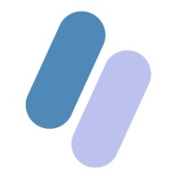
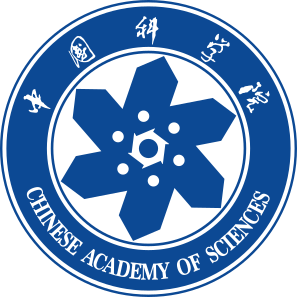

I'm an incoming PhD student focusing on multimodal agent post-training, with the goal of enabling agents to perceive the world and make complex decisions more like humans.
My perspective is shaped by both research training and hands-on industry experience. I believe impactful research should not only push the boundaries of knowledge, but also solve real problems with scalable, simple, and robust methods.
Research
2025 — Present
Video Understanding & Multimodal Agent Post-Training
Video understanding, long audio–video reasoning, and multimodal agent post-training.
OmniVideoBench: Towards Audio-Visual Understanding Evaluation for Omni MLLMs
One paper incoming
2024 — 2025
Multimodal Representation Learning
Fine-grained vision–language representation and pixel-text alignment.
PixCLIP: Fine-grained Visual Language Understanding via Any-granularity Pixel-Text Alignment Learning
2023 — 2024
EEG & Brain–Computer Interfaces
EEG-based BCI and mental-health modeling — reading signal directly off the brain.
STGE-Former: Spatial–Temporal Graph-Enhanced Transformer for EEG-Based Major Depressive Disorder Detection
Publications
OmniVideoBench: Towards Audio-Visual Understanding Evaluation for Omni MLLMs
PixCLIP: Achieving Fine-grained Visual Language Understanding via Any-granularity Pixel-Text Alignment Learning
FlowPrune: Accelerating Attention Flow Calculation by Pruning Flow Network
STGE-Former: Spatial-Temporal Graph-Enhanced Transformer for EEG-Based Major Depressive Disorder Detection
Claim-Level Rubric Rewards for Video Caption Reinforcement Learning
MLLM-CBench: A Comprehensive Benchmark for Continual Instruction Tuning of Multimodal LLMs with Chain-of-Thought Reasoning Analysis
A Multi-scale Representation Learning Framework for Long-Term Time Series Forecasting
Experience
Shopee · LLM Team, Pre-training
Large Language Model Algorithm Intern
Multimodal agentic post-training within the pre-training LLM team.
Sep 2025 — Apr 2026

Pinch · YC-backed AI startup
Machine Learning Engineer Intern
Voice cloning and text-to-speech for AI simultaneous interpretation — preserving speaker identity while keeping translation fast and accurate.
Jan 2025 — Jun 2025
Huawei · ICT
AI Engineer Intern
Multimodal large-model training and inference optimization — accelerating and migrating workloads from GPUs to Ascend NPUs.
Jun 2024 — Sep 2024
Education

Ph.D.
University of Chinese Academy of Sciences (UCAS) · Beijing
2025 — Present
B.S. in Artificial Intelligence
Southeast University · Nanjing
2021 — 2025